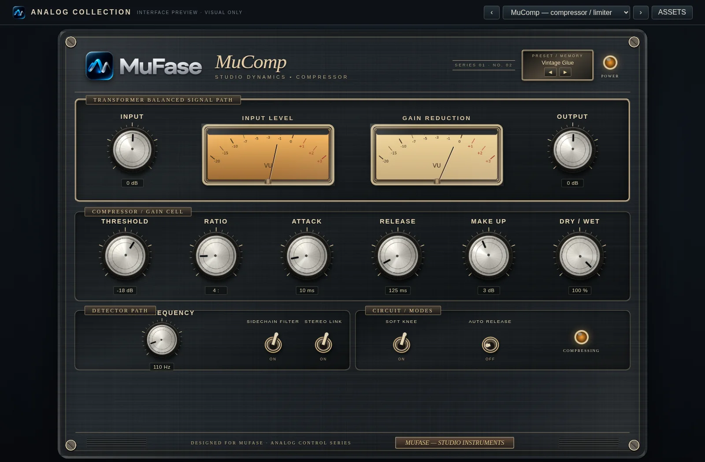

Dinámica / 02 DE 15
MuComp
Compresor — Control del rango dinámico.
Reduce diferencias de nivel entre los pasajes fuertes y suaves para aportar consistencia, pegada o control.

¿Qué hace?
Compresión de amplitud determinada por un umbral, una relación y tiempos de respuesta.
Controles principales
ThresholdNivel a partir del cual comprime.
RatioIntensidad de la compresión.
Attack / ReleaseVelocidad de entrada y recuperación.
Makeup / MixRecupera nivel y mezcla señal original.
Aplicación habitual: Estabilizar voces, dar consistencia a bajos o controlar los golpes de batería.